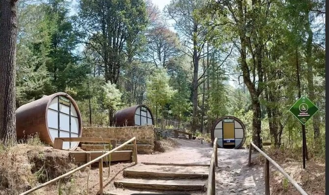
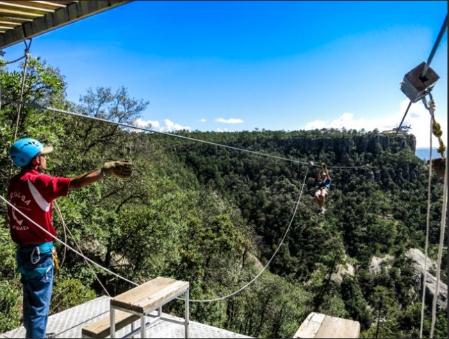
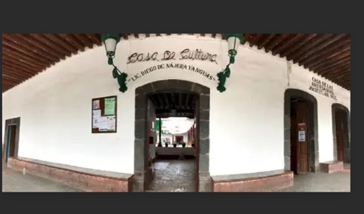
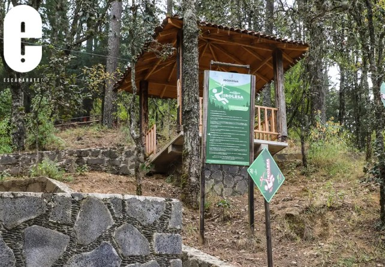

"JOCOTITLÁN, ESTADO DE MÉXICO"
"EVENTOS MÁS IMPORTANTES Y DESTACADOS EN JOCOTITLÁN DESDE 1980"
Jocotitlán es un destino turístico atractivo por su combinación de naturaleza, cultura y tradiciones. Ubicado a los pies del imponente Cerro Xocotépetl (también conocido como “El Xocotépetl” o “Cerro de Jocotitlán”), este lugar ofrece paisajes ideales para el senderismo, el ciclismo y la fotografía, además de vistas panorámicas que destacan la belleza del Estado de México. El municipio conserva un ambiente tranquilo y auténtico, con calles pintorescas, arquitectura tradicional y una fuerte identidad cultural. Su gastronomía típica, como los antojitos mexicanos y platillos regionales, también atrae a visitantes que buscan experiencias locales. Entre sus eventos más importantes destacan: la Fiesta en honor a Jesús Nazareno, que se realiza en enero y es la festividad más grande del municipio, incluyendo procesiones, danzas tradicionales, juegos mecánicos, música en vivo y actividades religiosas; la Feria del Señor de la Expiración, otra celebración importante que reúne a la comunidad con eventos culturales, comerciales y religiosos; y el Día de Muertos, que aunque se celebra en todo México, en Jocotitlán se vive de manera especial con altares, ofrendas y tradiciones que reflejan la identidad local. En conjunto, Jocotitlán es un lugar turístico porque ofrece una experiencia completa: naturaleza, tradición, festividades y un ambiente acogedor que permite conocer de cerca la cultura mexicana.




